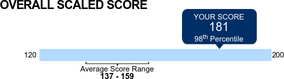
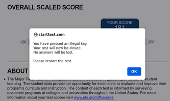

Every senior student at MVNU takes a standardized assessment. The assessment lets MVNU administration compare how well their students are doing against other institutions, and how well each program is teaching the fundamentals of the program's field. In my case the assessment was the ETS major field test for computer science.
While I knew the test was coming up, I wasn't given any information about what would be on the test, and since I knew it wouldn't affect my graduation or GPA I wasn't particularly concerned about studying for it. The day before the testing day I decided to look into exactly what I would be taking. I found a sample questions document (archived) by searching on google. These sample questions were representative of the actual test—as one'd expect—and there was nothing I hadn't seen in my courses at MVNU. The bulk of the questions seemed to be more "Computer Science" than "Computer Programming" and were covered by two courses in particular that I'd taken: Data Structures & Algorithm Design and Survey and Organization of Programming Languages. I didn't study much beyond checking out the sample questions.
On the day of the actual test classes were cancelled for everyone to let seniors take their major field assessments, juniors take their general education assessments (only every other junior class has to take these, I didn't have to last year), and everyone except graduating seniors to meet with their advisors and schedule classes for the next year. Sadly, I didn't get to enjoy much of the cancelled classes as I had to wake up for the major field test at 9 AM, and I still had my meeting with my Honors project advisor to keep wrapping things up. The test was proctored—as required by ETS—and administered in the main computer lab. The test itself was not very stressful; the sample questions were good preparation and representation of the actual assessment.
My score was displayed and e-mailed to me immediately after I completed the test. I scored 181 on a scale from 120–200, placing me in the 98th percentile. This is pretty good, and I'm happy with the score, and how it reflects on my learning at MVNU. I could have done a little better with more studying, but most of the questions could be solved with logic, and that's not something learned by cramming before a test—only years of practice can build that kind of understanding and that's what brought my score so high.
I couldn't find much other discussion online about the ETS major field test, just a couple blog posts from a student's blog.
Quirks of the results page
The results page pops up the individual results for the test that I took, but interestingly if I press an "illegal key" like the Windows key, it alerts me and leaves the page. Why? I don't know. Maybe it thinks I'm still taking the test.